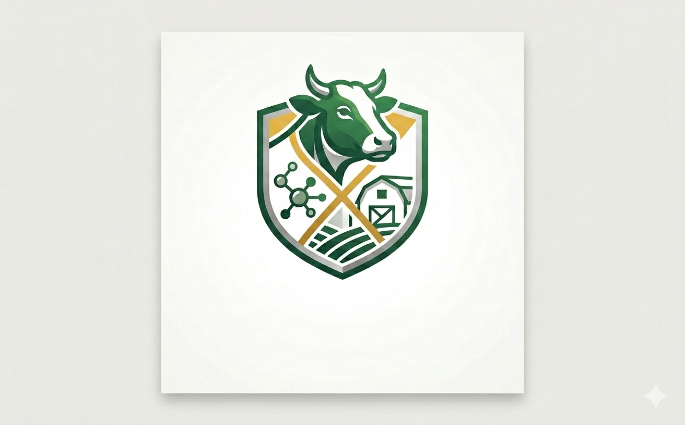

Ziraat Mühendisliği Disipliniyle Bilimsel ve Teknik Yaklaşımlar
Sürü projeksiyonu, genetik ilerleme hızı hesaplamaları ve modern ıslah yöntemleri.
(Detaylar için tıklayın)
Rasyon hazırlama yazılımları, KM (Kuru Madde) tüketimi ve metabolizabilir enerji dengesi analizi.
Hayvan refahı odaklı, ısı stresi kontrollü ve otomasyon destekli modern ahır projeleri.
Çukurova Üniversitesi Ziraat Fakültesi çatısı altında edindiğim teorik bilgileri, sektörün pratik ihtiyaçlarıyla birleştirerek sürdürülebilir hayvancılık çözümleri üretiyorum.
Teknik danışmanlık ve akademik iş birlikleri için ulaşabilirsiniz:
📧 E-posta: talhaalks@gmail.com